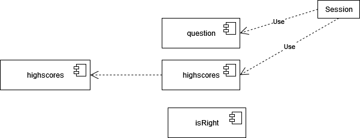
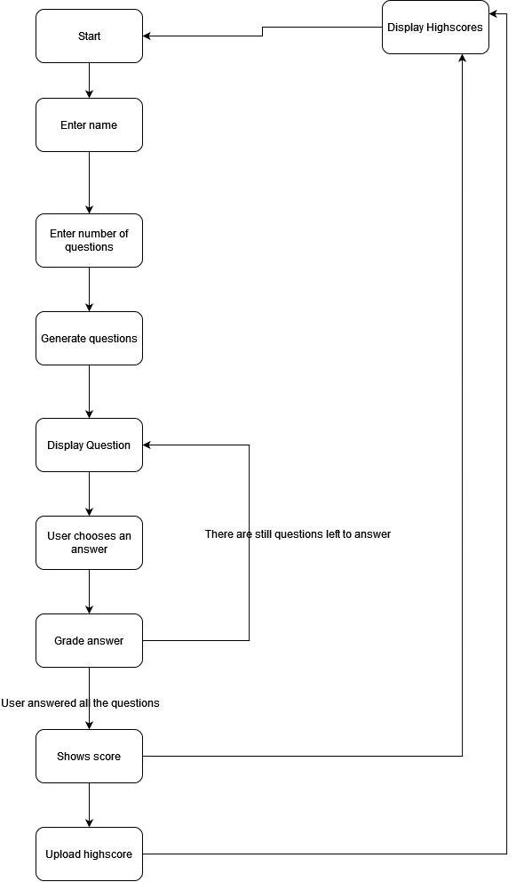
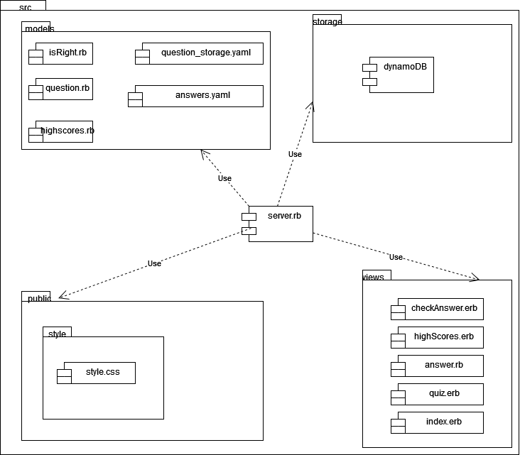
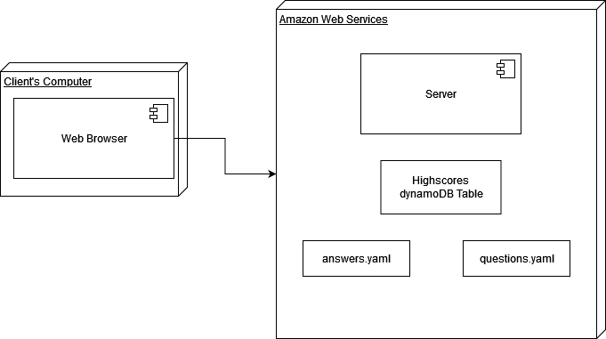
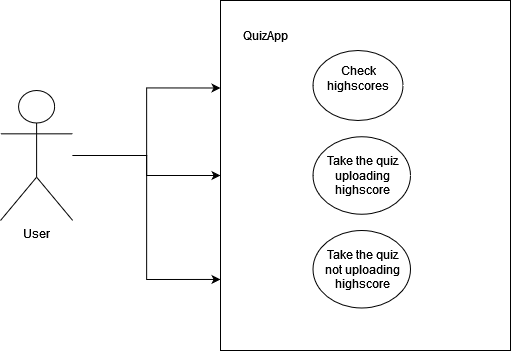

Software Design and Architecture Final Project¶ ↑
Quiz App with AWS microservices¶ ↑
| Authors |
Eduardo Roberto Müller Romero (A01745219), Sebastian Morales Martín (A01376228) |
| Date |
Jun 8, 2022 |
If you haven’t done so already, install the following gems. At the terminal type: (if your'e running it on a wsl you may need to use sudo)
$ gem install hanna-nouveau $ gem install sinatra $ gem install faraday $ gem install aws-sdk-dynamodb
The directory structure for the application and its documentation is as follows:
QuizApp/
├─ doc/ Folder produced by RDoc.
├─ img/ Folder for the documentation’s image files.
└─ src/ Folder for the application’s source code.
├─ public/ Folder for the server’s public documents.
│ └─ stylesheets/ Folder for the application’s CSS files.
├─ models/ Folder for the application’s models.
└─ views/ Folder for the application’s views (ERB files).
The root of the documentation should now be available at: QuizApp/doc/index.html
Use any web browser to see the result.
Running the Application¶ ↑
To run the server type the following command at the terminal from the taxEvation/src directory:
$ ruby server.rb
Afterwards, point your web browser the server’s root URL. Most likely it will be localhost:4567
4+1 Architectural View Model¶ ↑
Logical View¶ ↑
A session opens each time the user runs the application, he gets the questions with the lambda function question. The app checks with the lambda function isRight. At the end of the session the user can upload his highscore and also at any time he can consult the highscores.

Process View¶ ↑
The process our web application will offer two possible starting options, see highscores and starting a quiz, this will ask for user, number of questions, will generate a list of questions, retrieve a question, answer a question, grade a question, ask another question. If there are no more questions it will show a grade and offer to upload your grade or not.

Development View¶ ↑
Our application is formed by 4 parts:
server.rb: is the main ruby script, manages the gets and posts functions.
models: it includes all the lambda functions and the .yaml files with the questions and answers storage: the dynamoDB table that is on the AWS servers public: all the graphical utilities like stylesheets views: here we have all our .erb files that we use as frontend

Physical View¶ ↑
There are only 2 main physical instances to our project. One is the client's computer on which the application is loaded and from where the user is going to run it. The second one is AWS, there is the dynamoDB table and both .yaml files with questions and answers.

Scenarios¶ ↑
Our project has 3 possible scenarios:
-
Consult highscores: the user is going to be able to see the table with the highscores.
-
Answer quiz and upload grade: the user will answer the quiz and upload his/her grade.
-
Answer quiz and not upload grade: the user will answer the quiz but won't upload the grade.

Patterns Used¶ ↑
We used the following patters:
-
Domain-Specific Language: Sinatra is a DSL for creating web applications in Ruby and
server.rbimplements Sinatra routes -
Model-View-Controller: The application follows the classical web implementation of the MVC architectural pattern. The models (
.rbfiles) and views (.erbfiles) are stored in the correspondingmodelsbut they are there only for
documentation purposes but they are stored and executed in aws lambda, views directory. The controller is contained in server.rb file.
Acknowledments & Special Thanks¶ ↑
References¶ ↑
-
Refactoring Guru. Design Patterns. refactoring.guru/es/design-patterns Accessed June 6, 2022.
-
ArielOrtiz.info. Quiz #1. arielortiz.info/apps/s202211/tc3049/quiz1/ Accessed June 6, 2022
-
ArielOrtiz.info. Quiz #2. arielortiz.info/apps/s202211/tc3049/quiz2/ Accessed June 6, 2022
-
ArielOrtiz.info. Quiz #3. arielortiz.info/apps/s202211/tc3049/quiz3/ Accessed June 6, 2022
-
ArielOrtiz.info. Quiz #4. arielortiz.info/apps/s202211/tc3049/quiz4/ Accessed June 6, 2022
-
ArielOrtiz.info. Quiz #5. arielortiz.info/apps/s202211/tc3049/quiz5/ Accessed June 6, 2022
-
ArielOrtiz.info. Quiz #6. arielortiz.info/apps/s202211/tc3049/quiz6/ Accessed June 6, 2022
-
ArielOrtiz.info. Quiz #7. arielortiz.info/apps/s202211/tc3049/quiz7/ Accessed June 6, 2022
-
ArielOrtiz.info. Quiz #8. arielortiz.info/apps/s202211/tc3049/quiz8/ Accessed June 6, 2022
-
Olsen. Design Patterns in Ruby. Addison-Wesley, 2007.
-
-
rmb1905 (youtube channel). 2.01_The 4+1 Model. www.youtube.com/watch?v=yp2-_YbCuyM Accessed June 8, 2022